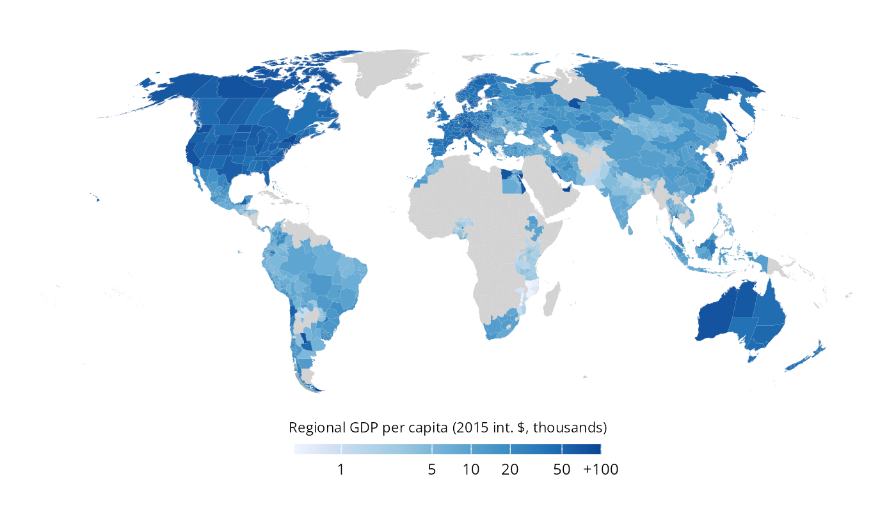

An R package to access DOSE, a global dataset of reported sub-national income data covering more than 1,600 sub-national regions across 83 countries over the period 1960-2020. Data is gathered directly from the relevant governmental statistical agencies, yearbooks, and academic literature, and harmonised accordingly.

References
Wenz, L., Carr, R.D., Kögel, N. et al. (2023). DOSE – Global data set of reported sub-national economic output. Scientific Data, 10, 425. https://doi.org/10.1038/s41597-023-023
Wenz, L., Kotz, M., Kalkuhl, M., Carr, R., Kögel, N., Giesen, C., Reckwitz, A., Wedemeyer, J., & Ziegler, K. (2024). DOSE - Global dataset of reported subnational economic output [Data set]. Zenodo. https://doi.org/10.5281/zenodo.13773040